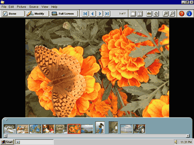

When the user wants to see a picture close up, they can double-click its thumbnail or select it and click the View button. This action will display the picture as close to full-size as possible on a black background (since the camera resolution is usually higher than that of the monitor, most images will be scaled down to fit on screen).
Even though the user is seeing one picture at a time, the other pictures in the envelope are still available. Clicking the forward or back buttons on the toolbar displays the next or previous picture. This provides the user a quick way to flip through all the pictures in an envelope, as they might with an envelope full of analog photos. With only one picture visible at a time, the user doesn’t have to manage dozens of image windows.
The blue “thumbnail tray” at the bottom of the screen provides random access to all the images in the current envelope. When the mouse is not over the tray, it slides downwards out of the way, much like the Windows task bar does when set to auto-hide.
